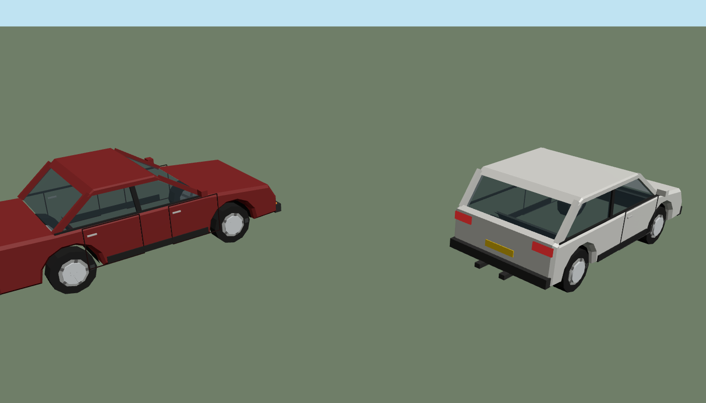
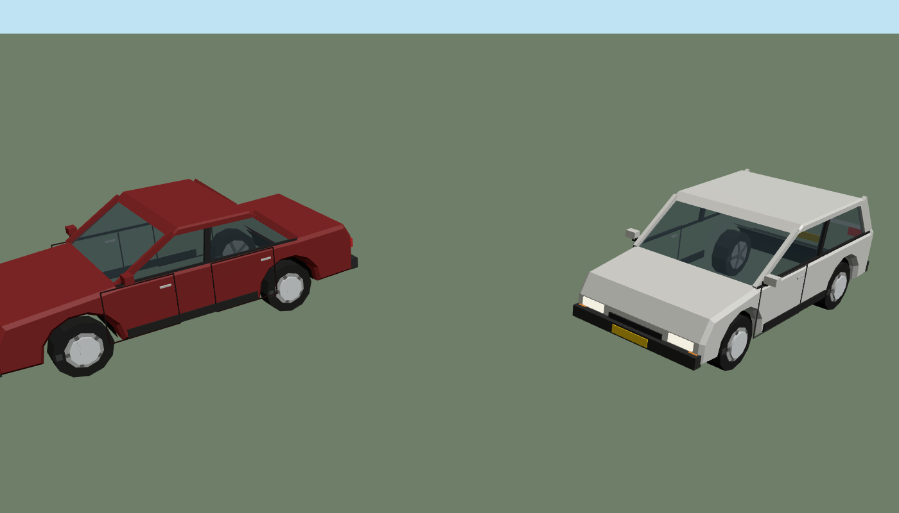
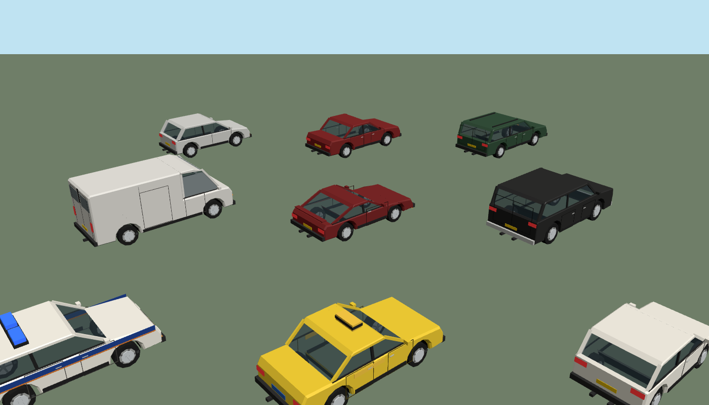
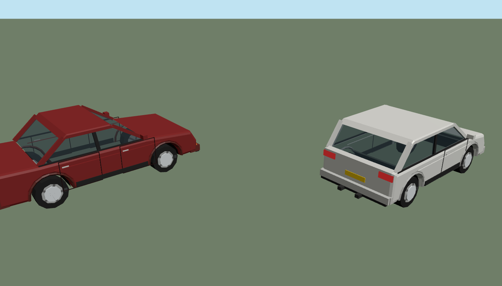
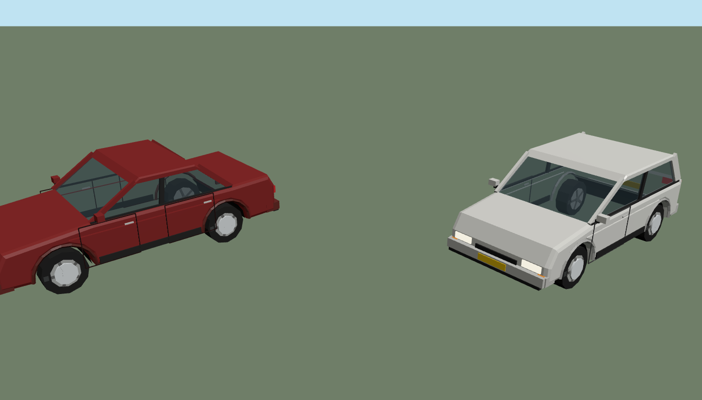
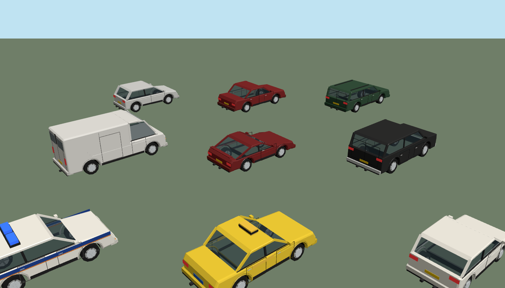
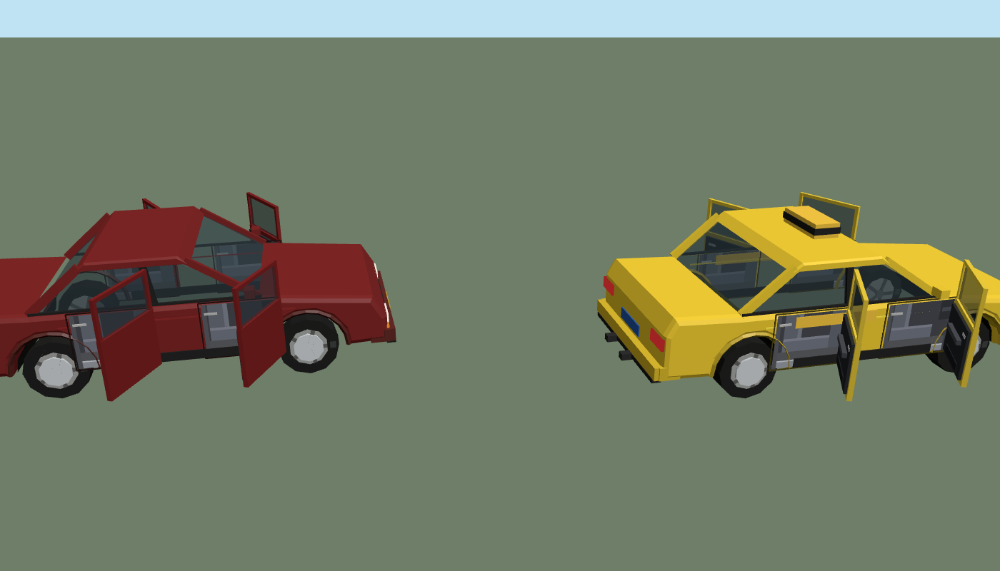

Quaternius (inspiratie)

Wat het mooier maakt: ronde, ingelopen flanken; bumpers in de lakkleur die om de hoek lopen, met een donkere onderlip; wielkasten met een lijst; een karakterlijn; zachte lakkleuren; donkere ruiten. Wat ze niet hebben en wij wel: openende deuren met interieur, cabine-LOD, sturende wielen, lichten, deurnaden, kleurvarianten en schade.
Onze huidige (vóór)



Onze nieuwe



